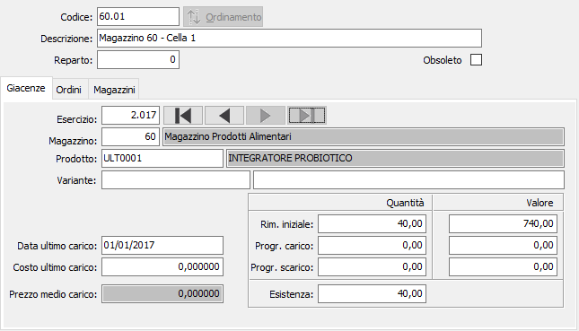
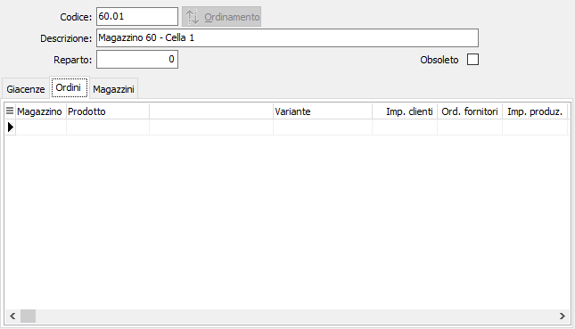
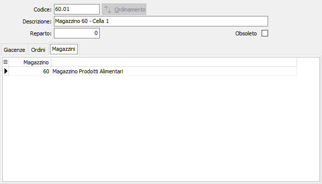

Collocazioni

CODICE: codice alfanumerico di 10 caratteri per identificare la collocazione in esame. Sul campo sono attive le funzioni di ricerca (F9).
DESCRIZIONE: campo alfanumerico di 50 caratteri per descrivere la collocazione.
REPARTO: codice numerico per identificare il Reparto in esame. Sul campo sono attive le funzioni di ricerca (F9) sulla tabella Reparti.
OBSOLETO: flag attivabile dall’utente per inibire il possibile utilizzo dell’elemento di tabella in esame nelle successive transazioni.
Il pulsante di Ordinamento consente di indicare la priorità delle collocazioni non assegnate a magazzini; se la collocazione è assegnata ad un magazzino il pulsante sarà disabilitato. Sono inoltre presenti tre linguette aggiuntive.
Nella sezione Giacenze vengono visualizzati i valori progressivi di esistenza iniziale, scarichi e carichi per i vari esercizi ed i vari magazzini gestiti.
I valori presentati nei vari campi del pannello giacenze non sono modificabili da parte dell’utente, in quanto generati dai movimenti di magazzino esistenti. Il significato di ciascun campo risulta evidente grazie all’etichetta che lo precede.
Agendo sulle freccette del pannello Giacenze, è possibile selezionare esercizi precedenti o successivi per visualizzare i valori di tali esercizi.
La sezione Ordini presenta, per la collocazione in esame, i valori di impegnato cliente, ordinato a fornitori, impegnato in produzione, ordinato a produzione, esistenza e disponibilità, quest'ultime relative all'esercizio corrente, per ciascuno dei vari magazzini gestiti.
I valori presentati nei vari campi non sono modificabili da parte dell’utente, in quanto generati dai documenti.

IMPEGNATO DA CLIENTI: campo gestito automaticamente dai programmi di magazzino e di gestione ordini clienti. È la quantità impegnata per ordini dai clienti e non ancora spedita.
ORDINATO A FORNITORE: campo gestito automaticamente dai programmi di magazzino e di gestione ordini fornitori. È la quantità ordinata ai fornitori e non ancora pervenuta.
IMPEGNATO DA PRODUZIONE: campo gestito automaticamente dai programmi di magazzino e di gestione della produzione. È la quantità impegnata per disposizioni di produzione e non ancora rientrata.
ORDINATO A PRODUZIONE: campo gestito automaticamente dai programmi di magazzino e di gestione della produzione. È la quantità ordinata a produzione e non ancora rientrata.
ESISTENZA: campo gestito automaticamente dai programmi di magazzino e di gestione della produzione. È la quantità presente nel magazzino nell'esercizio corrente.
DISPONIBILITÀ: campo derivato dai progressivi di magazzino, calcolato come esistenza + ordinato - impegnato + ordinato a produzione - impegnato in produzione. È relativa all'esercizio corrente.
Nella sezione Magazzini vengono visualizzati i magazzini a cui è assegnata la collocazione; se presenti dei magazzini, la collocazione potrà essere movimentata solo sui magazzini presenti nella griglia.
L'assegnazione di una collocazione ad un magazzino si effettua direttamente dalla manutenzione dei Magazzini.
